个人工作流 Skill 库
把设计、研发、动画、游戏制作和搜索研究中的方法整理成可复用的 Skill。通过分类、关键词和统一目录，找到当前任务需要的完整工作流程。

把经验变成可复用的方法
这份库集中维护工作流技能、参考资料与协作规范，覆盖设计与文档、研发与运维、动画质量、游戏制作、搜索与研究。当前目录整理了 19 项技能。
先找到，再完整使用
检索脚本按关键词或类别定位候选技能，再读取对应的完整说明和参考文件。机器可读目录、分类索引与技能正文分开维护，避免同一方法出现多个互相冲突的副本。
维护也是工作流的一部分
库中包含索引生成和一致性检查。带依赖的技能组需要一起迁移；技能文件本身不会自动安装工具、连接插件或启用账户权限。